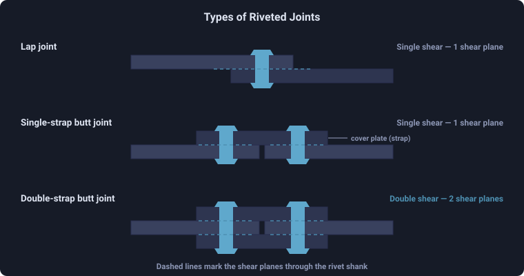
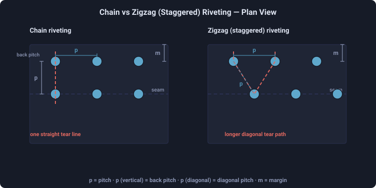
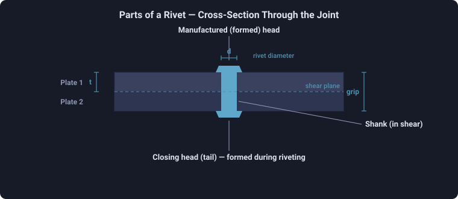
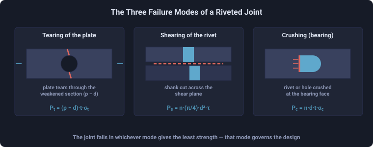

Rivet Joint Design & Failure Mode Simulator
Design bench — lap & butt joints, chain / zigzag arrangements, pitch, the three failure modes & joint efficiency
Display Controls
Σ Live equations — values substituted from current state
💡 Design coach — pitch, balance & efficiency insights
🧮 Step-by-step calculation
Enter the tensile load applied to the joint per pitch length. The simulator ramps the load up and shows whether the joint holds or which mode fails first — the failure mode with the lowest capacity gives way.
1 Overview
The Rivet Joint Designer is laid out like a design bench. The Simulate tab is the workspace: a plan-and-section drawing of the joint on the left, a strength-comparison chart on the right, a control deck of sliders below, and a dashboard of result cards. It sizes the rivet with Unwin's formula, computes the three failure strengths — tearing of the plate, shearing of the rivets and crushing (bearing) — the solid-plate strength, the governing (weakest) mode and the joint efficiency, plus design spacings: margin, back pitch, diagonal pitch and the IBR maximum pitch.
Four tabs share the tool: Simulate (the bench), Explore (concept cards by topic), Practice (design a random joint and check yourself) and Quiz (five scored questions with a star rating). A Units selector switches the whole tool between millimetres / kilonewtons and inches / kips.
2 The Control Deck
Each parameter has a slider with a stepper — drag for speed, or click −/+ or type an exact number: Plate thickness t, Rivet diameter d, Pitch p and Back pitch pb. Choose the Joint (lap, single-strap butt or double-strap butt), the number of Rows (single / double / triple riveted), the Arrangement (chain or zigzag), and whether the rivet diameter is set Auto (Unwin's formula) or Manual. Pick the Material for its allowable stresses (or + Custom to enter your own), and load a common shop setup from the Preset drop-down. The allowable stress chips below the sliders show σt, τ and σc for the chosen material.
3 Reading the Dashboard
The dashboard cards update live: rivet diameter from Unwin's formula, rivets per pitch length n, the tearing / shearing / crushing strengths, the solid-plate strength, a separate efficiency for each failure mode (ηt = Pt/P, ηs = Ps/P, ηc = Pc/P) whose least value is the joint efficiency, the weakest governing mode, the safe load per pitch, the margin, the diagonal pitch (zigzag), the IBR maximum pitch, the strap thickness (butt joints) and whether the rivets are in single or double shear. The efficiency card and the status chip on the chart highlight the governing mode. Open the Step-by-step calculation panel, or the Show Calculations button, for the full derivation in classical math notation.
4 Load Test simulation
The ⚡ Load Test button (next to the mm/inch toggle) runs a live failure simulation. Enter the tensile load applied per pitch in the active unit (kN or kip) and press Run Simulation. The simulator ramps the load up on the joint and compares it to the three capacities. If the load stays at or below the safe load (the least of tearing, shearing and crushing) the joint holds and a factor of safety is reported. If it exceeds the safe load, the weakest mode fails — the plate tears across the rivet holes, the rivets shear (on one plane, or two for a double-strap butt joint), or the rivets crush and elongate the holes — animated on the joint canvas with a capacity gauge and a bottom-line explanation of why that mode gave way first. Press the button again (now Stop Test) or change any control to return to the design view.
5 Explore Mode
Explore organises the theory into topic tabs — Basics (rivet parts, pitch terms, load path), Joint Types (lap vs butt, single/double/triple, chain vs zigzag), Formulas (each failure mode and efficiency with a worked numeric example), Design Rules (Unwin's formula, margin, pitch limits, balancing the modes) and Standards (boiler codes, caulking and fullering). Use it alongside Simulate to connect the numbers to the mechanics.
6 Practice & Quiz
Practice shows a random joint and asks for its tearing, shearing and crushing strengths and the efficiency; press Check to score and reveal the worked solution. Quiz runs five questions combining a governing-mode judgement with one numeric value, then shows your score with a one-to-three star rating and a per-question review. Switching units restarts the round in that system.
7 Metric vs Imperial
The Units selector converts the entire tool between millimetres / kilonewtons / megapascals and inches / kips / ksi. All calculations are carried internally in SI (mm, N, MPa) and converted only for display, so results stay consistent when you switch. Efficiency, rivet count and the governing mode are independent of units.
8 Drawing layers, exports & tips
Checkboxes under the joint drawing toggle layers: Dimensions, Centre lines, tensile Load arrows, the Side section, section Hatch and a debug Grid. The right panel switches between the Strength Bars and a Failure Modes illustration. The 📑 PDF Report button opens a full technical report — joint configuration, results, per-mode efficiencies, joint layout & strength diagrams, the load-test outcome and the design calculations — ready to print or Save as PDF. The PNG button exports the drawing with a watermark; CSV exports every result. Right-click a canvas to copy results, export, or reset.
- A well-designed joint balances tearing and shearing strength — tune the pitch until Pt ≈ Ps for maximum efficiency.
- A larger pitch raises efficiency but eventually fails the leak-tight maximum-pitch limit.
- Double-strap butt joints put the rivets in double shear, roughly doubling the shearing strength.
- Keep the margin at about 1.5d so the plate does not tear out at the edge.
Riveted Joint Design — Types, Failure Modes, Pitch & Joint Efficiency
A rivet joint designer turns the geometry of a riveted joint into the numbers an engineer needs to size and check it: the rivet diameter from Unwin's formula, the pitch and rivet arrangement, the three failure strengths — tearing of the plate, shearing of the rivets and crushing (bearing) — the solid-plate strength, the governing (weakest) mode and the joint efficiency. This free online tool computes all of them live, in metric (mm, kN, MPa) or imperial (in, kip, ksi) units, with the full derivation shown in classical math notation.
Riveted joints are the classic permanent fastening for boiler shells, pressure vessels, structural steel and aircraft skins. Even where welding has replaced them, riveted-joint design is a cornerstone of machine-design and strength-of-materials courses because it ties together direct stress, shear, bearing and the idea of a weakest-link efficiency. This simulator is built for mechanical and manufacturing students, apprentice fabricators, and engineers who want to see how pitch, rivet count and arrangement drive the strength and efficiency of a joint.
Types of Riveted Joints
Riveted joints are classified three ways at once — by how the plates meet, by how many rows of rivets are used, and by how those rows line up. Any real joint is a combination of all three.
| Classified by | Type | Description |
|---|---|---|
| Plate arrangement | Lap joint | Plates overlap; rivets pass through both and work in single shear. Load line is eccentric, so the joint tends to bend. |
| Single-strap butt joint | Plates edge to edge, one cover plate bridges the seam. Rivets still in single shear. | |
| Double-strap butt joint | Cover plate each side; load line stays straight and rivets work in double shear, roughly doubling shear strength. | |
| Number of rows | Single-riveted | One row of rivets each side of the seam. |
| Double-riveted | Two rows each side; roughly doubles rivet capacity. | |
| Triple-riveted | Three rows; used on high-pressure boiler seams. | |
| Row alignment | Chain riveting | Rivets in successive rows sit directly opposite; the plate tears along one straight transverse line. |
| Zigzag (staggered) | Each row offset by half a pitch; the tearing path runs diagonally and is longer, giving a stronger plate section. |
So a boiler longitudinal seam described as a triple-riveted zigzag double-strap butt joint is naming all three classifications at once. Efficiency rises as you move down each column: a single-riveted lap joint reaches only about 50–60%, while a triple-riveted double-strap butt joint can exceed 85%. The sections below take each choice in turn.

Choosing Between Lap and Butt Joints for Design Load
There are two fundamental joint families. In a lap joint the two plates overlap and the rivets pass through both; the load line is eccentric, so the joint tends to bend. In a butt joint the plates are placed edge to edge and one or two cover plates (straps) bridge the gap, with rivets through the strap and each main plate. A single-strap butt joint still loads the rivets in single shear; a double-strap butt joint loads them in double shear, roughly doubling the shearing strength for the same rivets, and keeps the load line straight.
Rivet Rows and Arrangements — Chain vs Zigzag
Joints are described by how many rows of rivets sit on each side of the seam: single-, double- or triple-riveted. With more than one row, the rivets are placed in one of two arrangements:
- Chain riveting — rivets in successive rows are directly opposite each other, so the plate tears along the same straight transverse line through every row.
- Zigzag (staggered) riveting — each row is offset by half a pitch, so the tearing path between rows runs diagonally and is longer, giving a stronger plate section. Boiler longitudinal joints are usually zigzag-riveted for this reason.

The Major Design Parameters
- Pitch (p) — centre-to-centre distance between rivets in a row. The single most important parameter: it sets both the plate's tearing strength and the number of rivets.
- Rivet diameter (d) — from Unwin's formula d = 6√t for plates over about 8 mm, rounded up to a standard size.
- Number of rivets per pitch (n) — equals the number of rows in the repeating pitch strip; it multiplies the shearing and crushing strength.
- Back pitch (pb) — transverse distance between rows.
- Diagonal pitch (pd) — rivet-to-rivet distance between adjacent zigzag rows, pd = √(pb² + (p/2)²).
- Margin (m) — edge-to-rivet distance, normally m = 1.5d.

The Three Failure Modes — Step by Step
Over one pitch length, a riveted joint can fail three ways. Each strength is computed and the smallest governs:

- Tearing of the plate between the rivet holes:
Pt = (p − d) · t · σt. - Shearing of the rivets:
Ps = n · (π/4)·d² · τ(use double shear for a double-strap butt joint). - Crushing / bearing of the rivets on the plate:
Pc = n · d · t · σc. - Solid-plate strength:
P = p · t · σt, and efficiencyη = min(Pt, Ps, Pc) / P.
Worked example — lap joint, t = 10 mm, d = 16 mm, p = 60 mm, double riveted (n = 2), σt = 80, τ = 60, σc = 120 MPa: Pt = (60 − 16)·10·80 = 35.2 kN, Ps = 2·(π/4)·16²·60 = 24.1 kN, Pc = 2·16·10·120 = 38.4 kN, solid plate P = 60·10·80 = 48 kN, so η = 24.1 / 48 = 50.2%, governed by shearing.
Joint Efficiency and How to Maximise It
Joint efficiency is the strength of the riveted joint divided by the strength of the solid plate. Because the weakest mode governs, the most efficient design makes the failure strengths roughly equal — in particular the tearing strength of the plate balanced against the shearing strength of the rivets. Increasing the pitch raises tearing strength (more plate metal between holes) but lowers the rivet density; adding rows or moving to a double-strap butt joint raises the shearing strength. Practical efficiencies run from about 50% for a single-riveted lap joint to over 85% for a well-designed triple-riveted double-strap butt joint.
Pitch Limits, Caulking and Leak-Tightness
The pitch is bounded below by about 2d (so the plate is not crushed between holes and rivets can be formed) and above by the leak-tight maximum from the Indian Boiler Regulations, p(max) = C·t + 41.28 mm, where C depends on the number of rivets per pitch and the joint type. For pressure-tight joints, the plate edges and rivet heads are caulked and fullered to close any gap and prevent leakage.
Common Riveted-Joint Design Mistakes
- Designing for one failure mode only. A joint is only as strong as its weakest mode — always compute tearing, shearing and crushing.
- Pitch too large. A wide pitch flatters the efficiency number but can violate the leak-tight maximum-pitch limit.
- Forgetting double shear. A double-strap butt joint shears each rivet on two planes — halving its area in the calculation under-rates the joint.
- Margin too small. Less than about 1.5d and the plate tears out at the edge.
- Ignoring arrangement. For the same pitch a zigzag joint has a longer tearing path than a chain joint.
Riveted Joint Design Formulas
| Quantity | Formula | Description |
|---|---|---|
| Rivet diameter | d = 6√t | Unwin's formula (t > 8 mm) |
| Tearing strength | Pt = (p − d)·t·σt | Plate tears between holes |
| Shearing strength | Ps = n·(π/4)·d²·τ | Rivets shear (×2 for double shear) |
| Crushing strength | Pc = n·d·t·σc | Bearing of rivet on plate |
| Solid plate | P = p·t·σt | Un-drilled plate strength |
| Efficiency | η = min(Pt,Ps,Pc) / P | Weakest mode ÷ solid plate |
| Margin | m = 1.5·d | Edge to rivet centre |
| Diagonal pitch | pd = √(pb² + (p/2)²) | Zigzag rivet spacing |
| Max pitch | p(max) = C·t + 41.28 | Leak-tight limit (IBR), mm |
Typical Allowable Stresses by Material
| Material | σt (MPa) | τ (MPa) | σc (MPa) | Notes |
|---|---|---|---|---|
| Boiler steel | 80 | 60 | 120 | Classic boiler-joint design values |
| Mild steel (structural) | 100 | 75 | 150 | General structural riveting |
| Wrought iron | 70 | 56 | 105 | Historic boilers & bridges |
| Stainless 304 | 110 | 85 | 165 | Corrosion resistance |
| Aluminium 2024 | 90 | 62 | 140 | Aircraft skins |
| Copper | 50 | 40 | 90 | Ductile, leak-tight |
Who Uses This Simulator?
Mechanical, manufacturing and aeronautical engineering students, apprentice boiler-makers and structural fabricators, machine-design and strength-of-materials instructors, and practising engineers checking a joint by hand all use this tool. It is built for vocational and engineering education, turning the textbook riveted-joint design procedure into a live, visual calculation you can verify step by step.
Explore Related Simulators
For rivet head types and joint nomenclature, see the Riveted Joints Trainer. The allowable stresses used here are measured on the Universal Testing Machine (UTM) simulator, and the shear behaviour of a fastener is explored in the Shear Stress Calculator. For sheet-metal forming geometry continue with the Sheet Metal Bend Radius Calculator, and for threaded fasteners see the Thread Nomenclature tool.